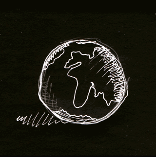
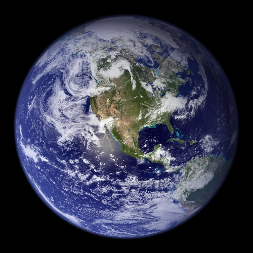
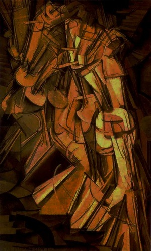
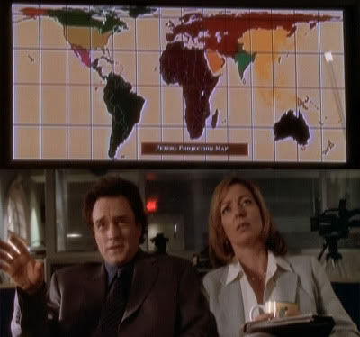

Project it Yourself
projections distort the world
"the real world"
we can't see behind things
Mercator
Albers
State Plane
Helvetica
Arial
Georgia
Comic Sans
Mona Lisa
The Scream
Starry Night
EPSG:4326 EPSG:900913 EPSG:3785
NO
your favorite projection that stupid XKCD post
mercator is racist gall-peters is ugly
the West Wing
Winkel-Triple got a 4.5629
numbers != science
I decided to go about it backwards.
I started with a kind of artistic approach.
I visualized the best-looking
shapes and sizes.
Then I figured out the mathematical formula to produce that effect.
Most mapmakers start with the mathematics.
Arthur H. Robinson
when you don't create things,
you become defined by your
tastes rather than ability.
your tastes only narrow &
exclude people. so create.
_why
Things you Create
f(x, y) → x
g(x, y) → y
 Project it Yourself
Project it Yourselfsimple technology: Canvas, GitHub, Javascript
uses, loves, enjoys eval and has no regrets
 good enough
good enough for Mercator, Albers, Equilateral, Azimuthal
share your projections on MySpace or Twitter!
 DEMO TIME
DEMO TIMEOPEN SOURCE